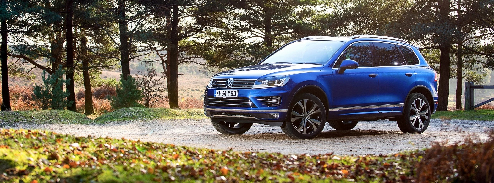
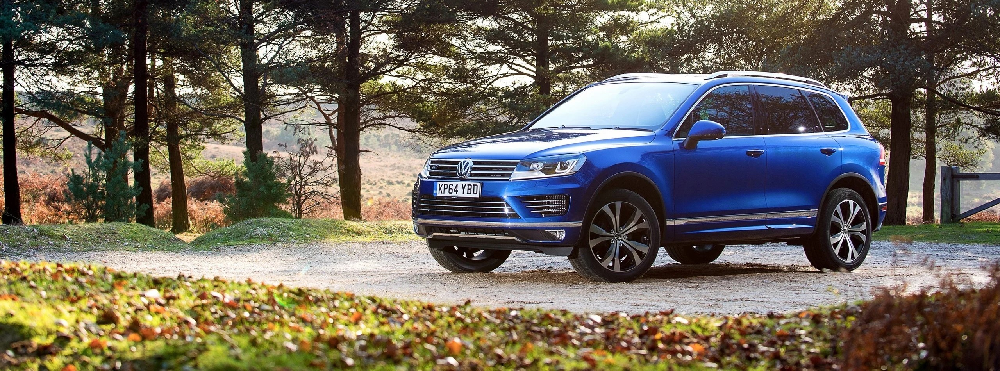

"VINNA" LEather, As extra decadent touch, Egro comfort seats.
The safety cage has been designed to protect passengers
in the event of a front, rear or side impact. In addition,
advanced thermo-formed steel B-pillars offer strong
reinforcements on top. The adaptive airbags have
been engineered to adjust to crash severity
and door sensors will deploy Protection

 

The Tuoareg is more than just a car; it’s more than just new technologies; it’s more than beauty; it’s a vehicle ready for adventures. The second generation Tiguan is made for wherever life may take you. With an interior as impressive as its exterior, the Tiguan means you don’t have to choose between style and family life. Together with its sleek design and masculine contours comes uncompromising comfort and technology. Meaning there is no challenge too big for the Tiguan.